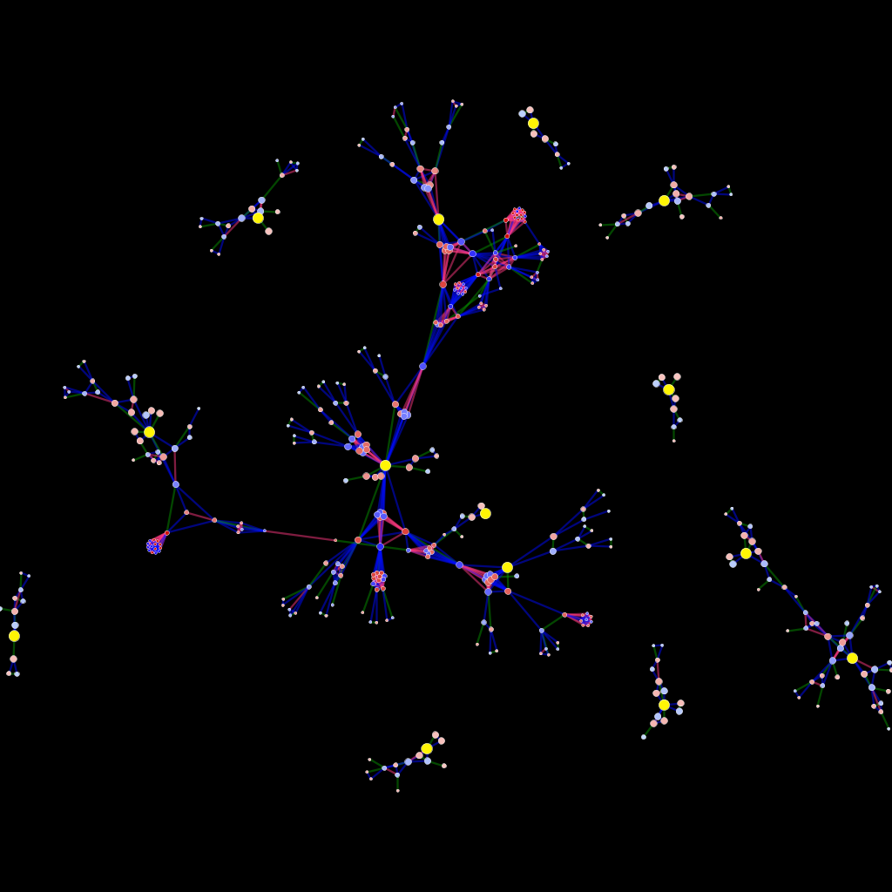
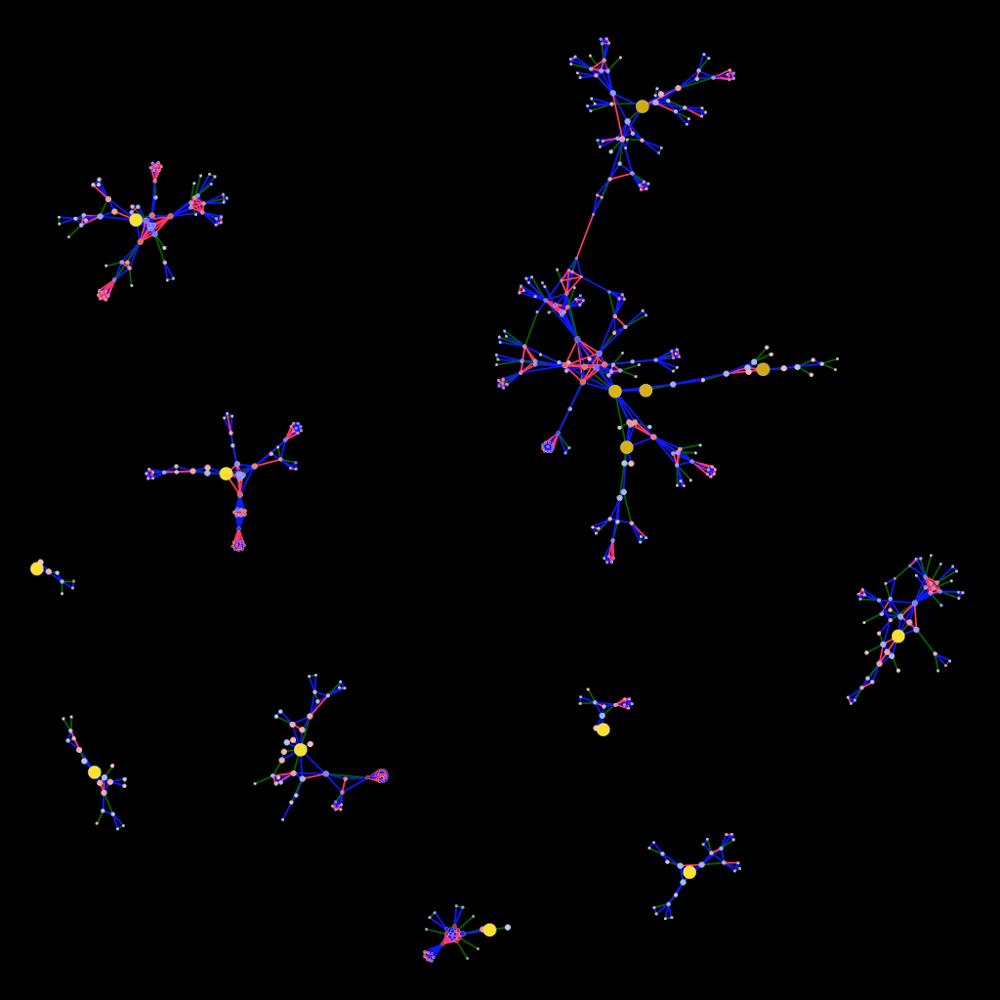
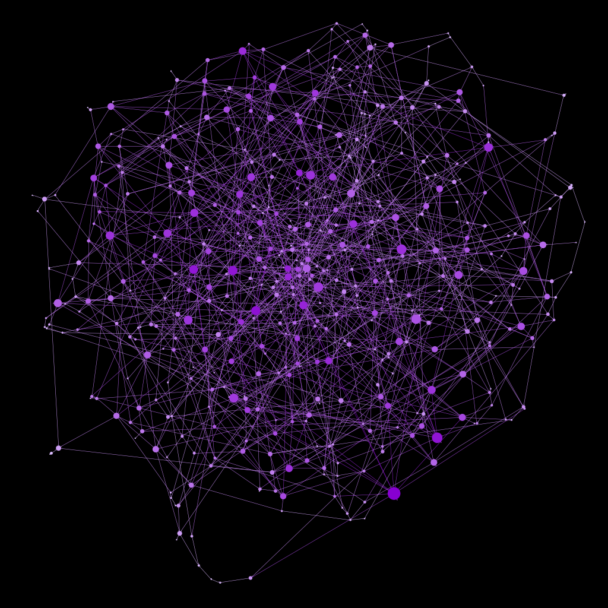
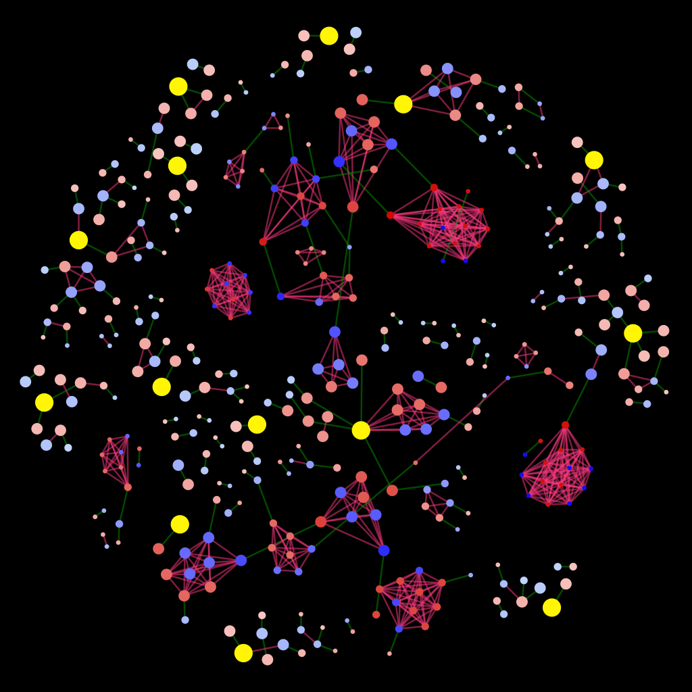
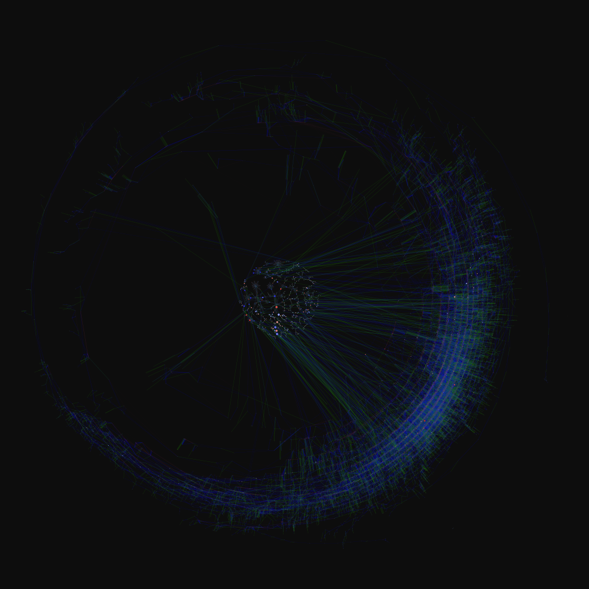

I’d forgotten just how fun Gephi is. A few exploratory examples below.

A graph being examined.

A random sample from the same network with which to compare the above sub-network.

A randomly-generated network with a similar number of nodes and edges. Obviously, I'll need to build a generator that better resembles the type of network we're studying.

the network above with a different layout (I'm becoming a bigger fan of the Strong Gravity option in ForceAtlas2) and only particular edge types turned on.


The sub-network within the larger network.